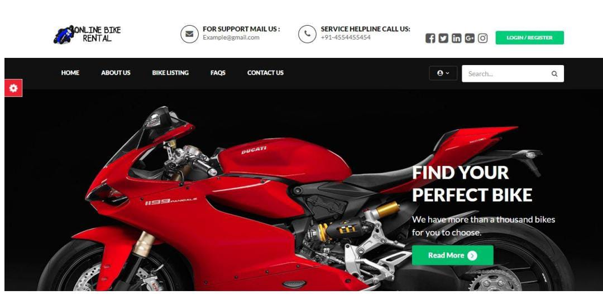
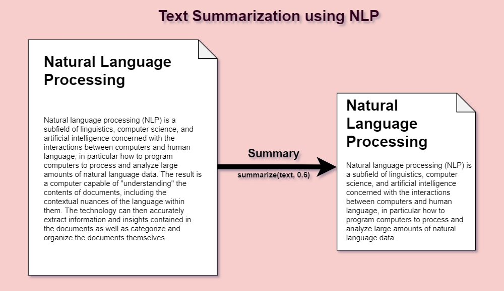

My Projects
Bike Rental System
The Bike Rental Management System is a cutting-edge software solution designed to streamline the operations of bike rental businesses. Its intuitive interface empowers both operators and customers, ensuring smooth experiences throughout the rental process. Operators can effortlessly manage user registrations, maintain a comprehensive bike inventory, and control bookings, pricing, and billing with precision. Customers enjoy the convenience of searching for available bikes, comparing flexible rental options, and making secure online reservations. This robust system eliminates administrative complexities, allowing bike rental businesses to maximize efficiency, boost customer satisfaction, and drive overall profitability.
Text Summarization
Text summarization is the process of identifying the most important meaningful information in a document or set of related documents and compressing them into a shorter version preserving its overall meanings .The text summarization project aims to develop an efficient algorithm for condensing large textual content into concise abstracts. Leveraging natural language processing techniques, the project focuses on extracting key information while maintaining the core meaning, offering a valuable tool for quickly grasping the essence of lengthy documents.